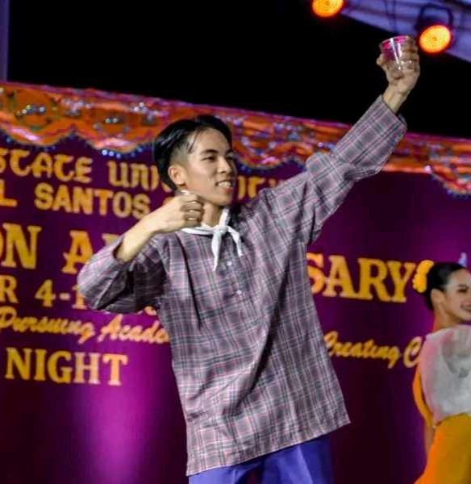

I am John Mark P. Asilo, 19 years old and a Mama's boy. I am now a second-year student at MSU Gensan, belonging to the English Department pursuing a Bachelor of Arts in English Language Studies.
I don't like to associate with other people that often, but when I do, we'll be the closest of friends if we vibe.
Love to stay inside the house and barely touch grass.
Hobbies
Playing online games like MLBB, Valorant, and I love to do some recreational activities like playing basketball and vollyball as liesures. I love watching horror shows, MSA, superhero movies, documentaries, and series.
I love to eat but I don't like cooking.
Talents
Playing instruments like xylophone, drums, guitar.
I also love partaking in dancing competitions like folk dancing.

Music Taste
I love listening to Taylor Swift, Lil Uzi Vert, The1975, The weeknd, Tj Monterde, December Avenue, Vansire, Turnover, Gorillas, Lany, Silent Sanctuary, Kiyo, Unique Salonga, Joji, Zild, Lauv, Poi, Summersalt, Nickelback, Cueshé , Russ, and any other indie rock pop music.